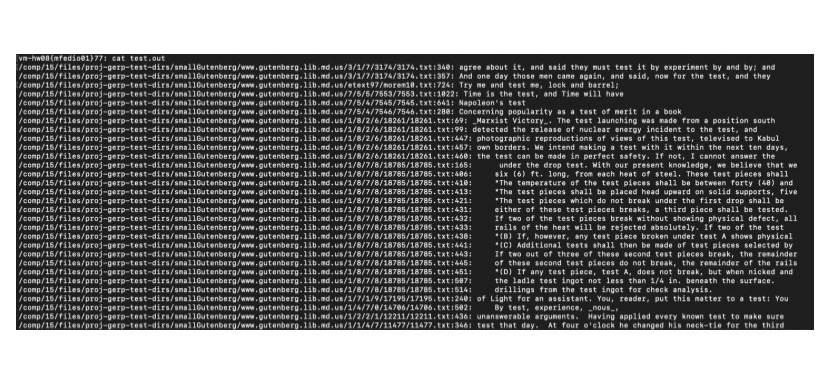

Modified Grep Linux Command
Details about and an example input/output from "Gerp", a modified version of the Linux "Grep" command
This was my final project for my freshman year spring semester CS course (CS15: Data Structures and Algorithms). This C++ program recreates the Linux Grep command to query words from a given input directory. By using a custom hash-map interface that handles collisions with linear probing, all words are indexed at program run-time. This means a couple of seconds of indexing at the start, but then near O(1) lookup time for any word from the user.
Example Input
"./gerp" runs the "gerp" executable, "/comp/15/files/proj-gerp-test-dirs/smallGutenberg" is a directory containing a sample of text from Project Gutenberg, and "test.out" is the output file. Upon running this command, the program prompts the user for words until the "@quit" exit code is given. The instances of the entered words are then written into test.out.

Example Output
The queried word was "test". Running the "cat" command on the output file shows the contents in test.out, and we can see all instances of the queried word in the input directory. The program also accepts case-insensitive searches by adding "@insensitive" to a query.
Key CS Concepts
- Data Structures and Algorithms: This program uses a Hash Map and Vectors and various read/write algorithms on them.
- Space and Time Complexity: By using a Hash Map and taking advantage of pointers-to-Strings, this program is space- and time-efficient, something very necessary when considering the potential sizes of input directories.